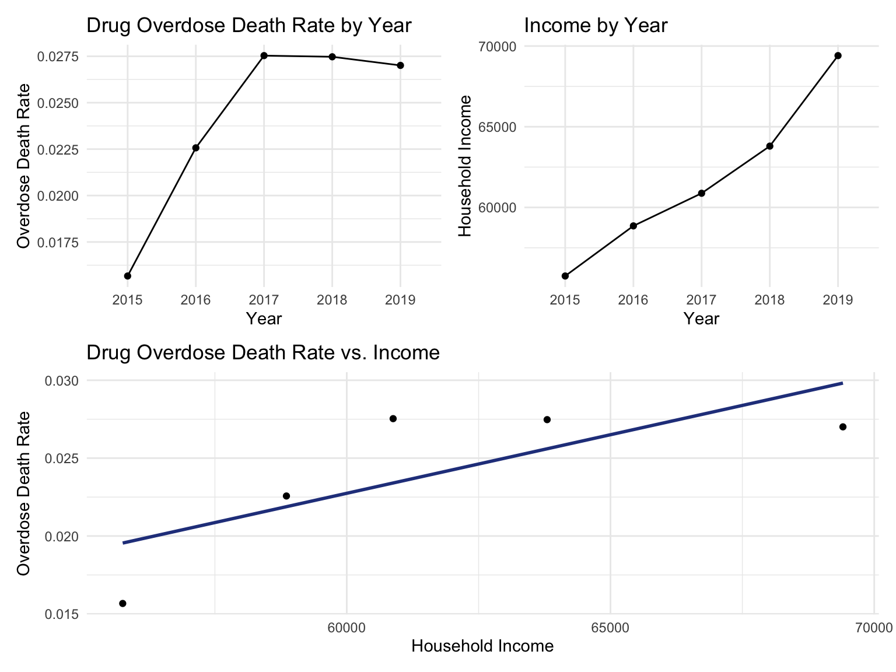
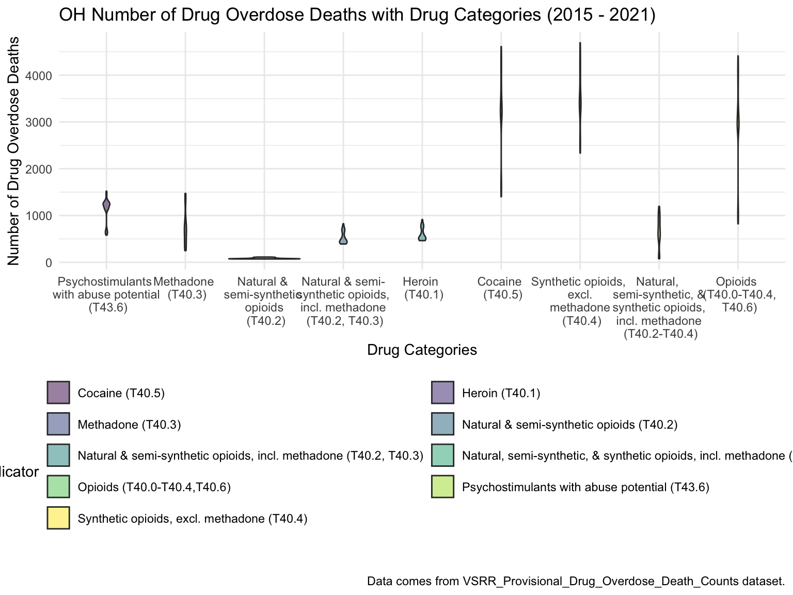

Report

Motivation
“Drug Overdose Deaths Remain High” - the headline posted by CDC rings the bell. Ever since 1999, nearly 841,000 people have died from drug overdoses. 70,630 drug overdose deaths occurred in the United States, in 2019 alone [1,2]. Deaths resulting from drug overdose increase drastically in every state, especially in those who recently passed bills to legalize/decriminalize recreational cannabis or marijuana in recent years. The abuse of and addiction to drugs is a genuine national crisis that influences public health as well as social and financial welfare.
Though CDC has posted the US drug overdose death rate and rate change maps from 2014-2019 along with the rate change graphs from 2014-2017, there hasn’t been any update for the past 2-3 years. Thus, our group wants to start from here and do more investigation upon the drug overdose death rate across states in the US. Fortunately, there are available drug-overdose-related data online to propel our motivation even further.
Initial Questions
Our final product aims to help identify factors associated with drug overdose mortality rate. Based on identified factors, we want to identify groups of people that are more vulnerable when facing drug overdose. In our final product, we answered: How do different types of drugs affect the death rate? How does drug usage differ across states? What identities make people more likely to be trapped into drug overdose in the U.S? What are the most significant factors that contribute to a higher drug overdose rate/death rate over time? During our journey of analyzing we want to confirm that after COVID-19 and self-isolation, the drug overdose death counts rose high. We also consider more factors like education level and smoking rate to establish regression models to see how they significantly contribute to the overdose death rate.
Data
Source
Scraping Method
CDC Wonder
CDC supported data extractions via queries. Many of our used datasets were scraped via entering the queries. Since the Wonder dataset is fairly comprehensive, we need to be specific about our criteria of “drug overdose death”. It is identified in the following way, consistent with the our main dataset: the VSRR provisional drug overdose death:
Drug overdose deaths are identified using underlying cause-of-death codes from the Tenth Revision of ICD (ICD–10): X40–X44 (unintentional), X60–X64 (suicide), X85 (homicide), and Y10–Y14 (undetermined). Drug overdose deaths involving selected drug categories are identified by specific multiple cause-of-death codes.
Under the multile cause of death criteria, we specifically selected drugs winthin the drug categories of interest. The drug categories include: heroin (T40.1); natural opioid analgesics, including morphine and codeine, and semisynthetic opioids, including drugs such as oxycodone, hydrocodone, hydromorphone, and oxymorphone (T40.2); methadone, a synthetic opioid (T40.3); synthetic opioid analgesics other than methadone, including drugs such as fentanyl and tramadol (T40.4); cocaine (T40.5); and psychostimulants with abuse potential, which includes methamphetamine (T43.6). Opioid overdose deaths are identified by the presence of any of the following MCOD codes: opium (T40.0); heroin (T40.1); natural opioid analgesics (T40.2); methadone (T40.3); synthetic opioid analgesics other than methadone (T40.4); or other and unspecified narcotics (T40.6).
In the end, we exported the data as a “.txt” file using the website GUI, and used Excel to “Save as” “.csv” file to complete the this data scraping process.
Datasets that are scraped this way includes:
usa_99_19.csvfor the index page mapping;agegroup_race_state_year_99-19.csvfor analysis of death against age group and race in the US states;fl_opi_death_15_19.csv,fl_opi_death_20_21.csvfor analysis of opioids death in Florida;ny_agegroup_race_state_year_99-19.csvfor analysis of death against age group and race specifically in the New York City boroughs.
Data USA: Median Household Income Dataset
- Directly download from the website as a “.csv” file.
- Datasets that are scraped this way includes:
median_household_income_CA.csv,median_household_income_FL.csv,median_household_income_NY.csv,median_household_income_OH.csvfor the 3 states and NYC analysis.
USA Overview: webpage and shiny app
Downloaded/Scraped from the CDC VSRR website and CDC Wonder
The main “VSRR” dataset comes from the official website of Centers for Disease Control and Prevention(CDC). Based on a current flow of mortality data in the National Vital Statistics System, this data contains provisional counts for drug overdose deaths within the 50 states, the District of Columbia, plus New York City from 2015 to 2021.
For drug overdose death in the United States by age and race information: scraping method mentioned above.
Dataset Cleaning
US Drug Overdose Death Dataset (main)
- First, we imported the US dataset from CDC, first cleaned the name, and then viewed the data to check which states the entire dataset contains. We’ve found that instead of having the usual 50 states, Washington DC, and New York City, the data set also contains data for the whole US. We choose to focus on the 52 jurisdictions (including the 50 states, DC, and NYC ) at first. We also made a new 52 level of states by adding the District of Columbia and New York City to the usual 50 state-level alphabetically. Then we started to tidy the data. Considering the scale and visual effect of the data table, we defined the state level and then used the filter function to remove the United States. Then used the mutate function change month and year to factor, and finally arranged the dataset according to the month.
US Age and Race Dataset in Shiny
- This dataset was obtained via queries from CDC Wonder, which contains the number of deaths of different races and ages and also the number of deaths of drug overdose across all states from 1999 to 2019. First, read the entire file and clean the name. Because we want to draw a visual diagram to show the relationship between them, we use the select function to select only the variables we need: state, age, year, race, deaths, total population. Secondly, considering the integrity of the data, check found that the data contains a small amount of NA. In order to avoid affecting the later calculation of the death rate, we dropped NA. Through group by function, we can summarize the total number of deaths caused by drug overdose and the total population. By dividing these two numbers, the crude rate can be obtained. Since the number may be too small, the value of the ordinate in the visualization picture is not easy to read, so we multiply by 100000 to avoid the occurrence of e- (i.e. 10 to the power of a large negative number).
State-wise & NYC
Read the main dataset
VSRR_Provisional_Drug_Overdose_Death_Counts.csv(referred as VSRR dataset later) and did preliminary data cleaning, including clean names and change variablesmonth,year,state_nameto factors. We then each filter the raw tibble dataframe to our states/ city of interest and save as a new dataframe to further proceed our data analysis.One of the columns in the cleaned dataframe,
indicator, contains 9 specific drug types, number of drug overdose deaths, number of total deaths, and percent with drug specified for states during each month in years. We’ve found that there are 9 states (Alabama, Arkansas, Florida, Idaho, Louisiana, Minnesota, Nebraska, North Dakota, Pennsylvania) missed the specific drug type information during this 6 year period from 2015-2021, maybe due to loss during the data collection period. Moreover, drug types information was missing in 2016 and 2017 for all 52 “jurisdiction” in the US, including DC and NYC. Nevertheless, this column is important in our later analysis and thus is worth elaborated. It should be noted that since Florida didn’t have drug-specific data, we choose to focus our analysis only on the overall and opioids trends. Data collected from CDC Wonder for the opioids also underwent similar data processing as the others, and two datasets (one contains data from 2015-2019, the other contains data from 2020-2021) were combined to keep consistency across analysis for all states of choices.To prepare for Exploratory Data Analysis for each state/cities, we further filtered out the
indicatorcolumn for “Number of drug overdose deaths” and “Number of deaths” and did some calibration. We divided number of drug overdose deaths over number of total deaths to get the drug-overdose-induced death rates, which is a number between 0 and 100%.The age-group-race analysis used the datset
agegroup_race_state_year_99-19.csvand contains data entries from 1999 to 2019. On top of regular data preprocessing steps, we also calculated the crude death rates. Rationale behind the crude death rates was explained above.For the median household datasets, we adopted similar data preprocessing steps as above and kept all these datasets consistent with each other. The median household datasets contain data until 2019. Since the main VSRR dataset only contains data after 2015, we filtered all 4 median household income datasets to contain only the five-year range from 2015 to 2019.
Last but not least, we use the
NCHS_-_Drug_Poisoning_Mortality_by_County__United_States.csv(referred as NCHS dataset later) andny_agegroup_race_state_year_99-19.csvdatasets. Both datasets contain data from 2003-2018. Besides imilar data preprocessing methods mentioned above, we also add FIPS value (a county-specific identification code) via left-join function for plotting purpose.
Regression
Data obtained from United States Census Bureau, America’s Health Rankings, and Statista
To be consistent with our main dataset, and given that it was extremely difficult to find statistical data for 2020 and 2021, the predictors’ datasets were all from year 2015 - 2019. In a few words, we imported different datasets for each predictor variable, filter them to get the data only for 50 states and Washington D.C.. When necessary, we combined the dataset for each of the predictors if the raw dataset only contains one year of data. Last, we calculated the crude rate based on the cleaned datasets for each predictor, if applicable.
A list of predictors adopting the data cleaning methods above: Poverty rate, Unemployment rate, Divorce rate, Smoke rate, Binge drinking.
The following may have some specific cleaning methods:
Population: We do not count population as predictors. This data is only used to compute other predictors from available data.
Education rate: This contains the number of people with different education levels. We consider bachelor’s education as the threshold of “high education”. Therefore, we sum-up the number of people who have a bachelor or above degree. Then, we take an average of the number for 5 years. And the education rate can be calculated by dividing the high-educated population with the total population. Here the education rate means the proportion of the population who receive bachelor’s or higher education.
Crude death rate: We take data from the US overview and shiny app used dataset. The formula and rationale are mentioned above.
Exploratory Analysis
US
Our project intends to identify the factors that are associated with drug overdose and drug overdose death. We first performed a visual analysis using the national drug overdose death data. The national map presented on the Homepage presents the mortality trend of various states from 1999 to 2019 due to drug overdose. It can be clearly seen that overdose causes more and more deaths with the passage of time, which we need to pay attention to. Therefore, we conducted further analysis in the US overview page.
In order to analyze the number of deaths in each state and the trend with time according to the type of drug, we only keep the data with the drug label (T4…) in the indicator column in the table. Then draw a picture according to the type of medicine.
The legends in this picture represent different drug types caused deaths. However, some charts may contain the code of more than one drug. This is because the death of the patient is caused by a mixture of multiple drugs. This means that the increase in mortality may be due to the use of multiple drugs with opioids.
drug_overdose = read_csv("./data/VSRR_Provisional_Drug_Overdose_Death_Counts.csv") %>%
janitor::clean_names()
# contains 50 states, Washington DC, whole US, and the City of New York.
state_level = c(state.name[1:8], "District of Columbia", state.name[9:32],"New York City", state.name[33:50])
drug_overdose = drug_overdose %>%
rename(death = data_value)
drug_overdose_52 =
drug_overdose %>%
filter(!(state_name %in% c("United States"))) %>%
relocate(state_name) %>%
mutate(month = factor(month, levels = month.name), # change month and year to factor
year = factor(year),
state_name = factor(state_name, levels = state_level)) %>%
arrange(state_name) %>%
group_by(state_name, year) %>%
mutate(month = sort(month)) # sort by month order
drug_overdose_death =
drug_overdose_52 %>%
select(-c( footnote_symbol, percent_complete, period, percent_pending_investigation, predicted_value)) %>%
filter(indicator %in% c("Number of Deaths", "Percent with drugs specified", "Number of Drug Overdose Deaths"))
drug_categories =
drug_overdose_52 %>%
ungroup() %>%
select(-c(state, footnote_symbol, percent_complete, period, percent_pending_investigation, footnote, predicted_value)) %>%
filter(str_detect(indicator, "T4"))
drug_type_plot =
drug_overdose %>%
filter(state %in% c("US")) %>%
filter(!(indicator %in% c("Number of Deaths", "Number of Drug Overdose Deaths", "Percent with drugs specified")))%>%
relocate(state) %>%
mutate(month = factor(month, levels = month.name), # change month and year to factor
year = factor(year)) %>%
arrange(state) %>%
group_by(state, year) %>%
mutate(month = sort(month)) %>%
ggplot(aes(x = month, y = death,color = indicator)) +
geom_point()+
scale_x_discrete(labels = month.abb)+
facet_grid(~year)+
theme(axis.text.x = element_text(angle = 90, vjust = 0.5, hjust = 1))+
ggtitle("Drug Type Related Overdose Death Changes Across Year") +
theme(plot.title = element_text(hjust = 0.5)) +
labs(y = "Drug Overdose Death Counts", x = "Month")
drug_gplt = plotly_build(drug_type_plot) %>%
layout(legend = list(orientation = "h"))
name_change = c("T40.5", "T40.1", "T40.3", "T40.2","T40.2, T40.3",
"T40.2-T40.4", "T40.0-T40.4,T40.6","T43.6", "T40.4")
name_index = c(1,8,15,22,29,36,43,50,57)
for (i in name_index){
drug_gplt$x$data[[i]]$name = name_change[which(name_index == i)]
}
drug_gpltIt can be clearly seen that most of the deaths caused by drugs have shown an upward trend with the increase of years. And the number of deaths caused by overdose of opioids has been ranked first during 2015-2021. This is because opioids are alkaloids and derivatives extracted from poppy. On the one hand, it has a good analgesic effect, on the other hand, it is also addictive and drug resistant. And due to the insufficient control of opioids by the US government, opioids have become heroin substitutes when addicts cannot get drugs.
However, the deaths of methadone have been in a slow-down trend. This may be because Methadone is a long-acting full opioid agonist and a Class II controlled drug. Methadone is available in tablet, powder and liquid forms. According to the law, only SAMHSA-certified treatment plans (OTP) can dispense methadone for OUD. Therefore, such drugs are not readily available on the market, and require a prescription from a doctor to get them, and thus has always shown a low mortality rate. To sum up, the strict supervision of drugs can effectively suppress the death rate caused by drug use.
Since we found that some states lack detailed data on different types of drug deaths when collating the data, we are worried that the inaccuracy of the results will be caused due to the incompleteness of the data.
# missing states' data:
miss_states =
drug_overdose_52 %>%
ungroup() %>%
select(state_name) %>%
unique() %>%
filter(!(state_name %in% drug_categories$state_name))
knitr::kable(miss_states)| state_name |
|---|
| Alabama |
| Arkansas |
| Florida |
| Idaho |
| Louisiana |
| Minnesota |
| Nebraska |
| North Dakota |
| Pennsylvania |
overview_year =
drug_overdose %>%
filter(indicator == c("Number of Deaths", "Number of Drug Overdose Deaths")) %>%
select("state", "year", "month", "indicator", "death") %>%
filter(!(state == "US")) %>%
filter(str_detect(indicator, "Drug Overdose Deaths")) %>%
group_by(state, year, indicator) %>%
summarize(death= sum(death))
overview_year_plot =
overview_year %>%
ggplot(aes(x = year, y = death, color = state)) +
geom_point() +
geom_line()+
theme_set(theme_minimal() + theme(legend.position = "bottom")) +
labs(
title = "Number of Drug Overdose Deaths over Year by State",
x = "Years",
y = "Number of Drug Overdose Deaths"
)
ggplotly(overview_year_plot)In order to further and more accurately study the trend of drug overdose in the United States, we obtained the three states with the highest number of deaths each year by mapping the total number of deaths of drug overdose in each state from 2015 to 2021. At the same time, we further selected California, Florida, NYC, and Ohio as the representative of each census region - West, South, East, Midwest - and conducted more details analyses on each of the region.
Interactive Maps
We used a shiny app to implement an interactive map. There are two tabs in this dashboard. The first tab shows the number of deaths caused by drug overdose in the United States. Users can choose different types of drugs and years to see the changes. Year 2016 and 2017 were excluded as data on deaths counts related to each drug types were missing from the main VSRR dataset. The second tab is about the relationship between the death rate of drug overdose and age and race. Similarly, users can see the overall trend by selecting the year. One of the interesting findings is that, in terms of age, more middle-aged Americans died from drug overdose than young people in their 20s.
West - California
For California, we can see that the highest drug overdose death is caused by Synthetic opioids,methadone (T40.4). The following Drug Categories cause high overdose death are Cocaine and semi-synthetic opioids. When analysing Drug Overdose Deaths with Drug Categories by Year, we find that 2020 had a higher number of drug overdose deaths than other years, which can be caused by covid-19 and self-isolation. We are also able to see the increasing trend of drug overdose in continuous years from 2015-2021. When analyzing Drug Overdose Deaths with Drug Categories by Year, drug overdose deaths keep increasing over the years with almost all types of drugs. When we analyze overdose death by Age and Race, it shows that people in California among age 55-64 across all races have the highest death rate. Black or African Americans have the highest death rate among all races. California has a higher median household income than the US and the northern part of California has the highest income compared to other parts of California. Northern California has the highest death rate in the state. So we can find that there is an association between higher drug overdose and higher income.
drug_overdose = read_csv("./data/VSRR_Provisional_Drug_Overdose_Death_Counts.csv") %>%
janitor::clean_names()
state_level = c(state.name[1:8], "District of Columbia", state.name[9:32],"New York City", state.name[33:50])
drug_overdose_52 =
drug_overdose %>%
filter(!(state_name %in% c("United States"))) %>%
relocate(state_name) %>%
mutate(month = factor(month, levels = month.name), # change month and year to factor
year = factor(year),
state_name = factor(state_name, levels = state_level)) %>%
arrange(state_name) %>%
group_by(state_name, year) %>%
mutate(month = sort(month))
drug_overdose_death =
drug_overdose_52 %>%
select(-c(state, footnote_symbol, percent_complete, period, percent_pending_investigation, predicted_value)) %>%
filter(indicator %in% c("Number of Deaths", "Percent with drugs specified", "Number of Drug Overdose Deaths"))
drug_categories =
drug_overdose_52 %>%
ungroup() %>%
select(-c(state, footnote_symbol, percent_complete, period, percent_pending_investigation, footnote, predicted_value)) %>%
filter(str_detect(indicator, "T4"))By Drug Type
CA_death =
drug_overdose_52 %>%
filter(state_name %in% "California",
indicator %in% c("Number of Deaths", "Number of Drug Overdose Deaths")) %>%
select(year, month, indicator, deaths = data_value) %>%
pivot_wider(
names_from = indicator,
values_from = deaths
) %>%
janitor::clean_names() %>%
group_by(year, month) %>%
mutate(
percent_overdose_death = number_of_drug_overdose_deaths / number_of_deaths
) %>%
mutate(year = factor(year))
CA_df =
drug_categories %>%
filter(state_name %in% c("California"))
ggplot(CA_df, aes(indicator, data_value))+
geom_boxplot(aes(fill = indicator), alpha = 0.5) +
scale_x_discrete(labels = c("Psychostimulants \n with abuse potential \n (T43.6)", "Methadone \n (T40.3)", "Natural & \n semi-synthetic \n opioids \n (T40.2)", "Natural & semi-\n synthetic opioids, \n incl. methadone \n (T40.2, T40.3)", "Heroin \n (T40.1)", "Cocaine \n (T40.5)", "Synthetic opioids, \n excl. \n methadone \n (T40.4)", "Natural, \n semi-synthetic, & \n synthetic opioids, \n incl. methadone \n (T40.2-T40.4)", "Opioids \n (T40.0-T40.4,\n T40.6)")) +
guides(fill = guide_legend(nrow = 6, byrow = TRUE)) +
labs(
title = "CA Number of Drug Overdose Deaths with Drug Categories (2015 - 2021)",
x = "Drug Categories",
y = "Number of Drug Overdose Deaths",
caption = "Data comes from VSRR_Provisional_Drug_Overdose_Death_Counts dataset."
) By Year
ca_death_by_year =
drug_overdose_52 %>%
filter(state_name %in% c("California")) %>%
ungroup() %>%
select(year, month, indicator, data_value) %>%
filter(indicator %in% c("Number of Deaths", "Number of Drug Overdose Deaths")) %>%
pivot_wider(
names_from = indicator,
values_from = data_value
) %>%
janitor::clean_names() %>%
group_by(year, month) %>%
mutate(
percent_overdose_death = number_of_drug_overdose_deaths / number_of_deaths
)
ca_death_by_year %>%
ungroup() %>%
ggplot(aes(x = month, y = percent_overdose_death, color = year)) +
geom_point() +
geom_line(aes(group = year)) +
labs(
title = "Percent of Drug Overdose Deaths over Total Number of Deaths by Year in CA",
x = "Months",
y = "Percent of Drug Overdose Deaths",
caption = "Data comes from VSRR_Provisional_Drug_Overdose_Death_Counts dataset from 2015 to 2021)."
)ggplot(ca_death_by_year, aes(x = month, y = percent_overdose_death, group = year, color = year)) +
labs(title = "") +
geom_line() +
geom_point() +
facet_grid(.~year) +
labs(
title = "Percent of Number of Drug Overdose Deaths with Drug Categories by Year in CA",
x = "Month",
y = "Percent of Drug Overdose Deaths",
caption = "Data comes from VSRR_Provisional_Drug_Overdose_Death_Counts dataset between 2015 and 2021."
) +
theme(axis.text.x = element_text(angle = 90, hjust = 1)) Drug ~ Year
CA_df %>%
filter(year %in% (2019:2021)) %>%
ggplot(aes(x = year, y = data_value, color = indicator)) +
geom_smooth(aes(group = indicator), se = FALSE) +
guides(color = guide_legend(nrow = 6, byrow = TRUE)) +
labs(
title = "Number of Drug Overdose Deaths by Year in CA",
x = "Year",
y = "Number of Drug Overdose Deaths",
caption = "Data comes from VSRR_Provisional_Drug_Overdose_Death_Counts dataset between 2019 and 2021."
)By Age and Race
ca_death_by_age =
read_csv("./data/agegroup_race_state_year_99-19.csv") %>%
janitor::clean_names() %>%
select(state, year, ten_year_age_groups, race, deaths, population) %>%
filter(state %in% c("California")) %>%
mutate(year = factor(year),
crude_rate = deaths/population * 100000)
ca_death_by_age %>%
mutate(ten_year_age_groups = gsub("years", "", ten_year_age_groups)) %>%
ggplot(aes(x = ten_year_age_groups , y = crude_rate, fill = race)) +
geom_boxplot(alpha = 0.5)+
facet_grid(~race) +
labs(
title = "Number of Drug Overdose Deaths with Drug Categories by Age and Race in CA") +
theme(axis.text.x = element_text(angle = 90, vjust = 0.4, hjust = 1))Income
CA_income_df =
read_csv("./data/median_household_income_CA.csv") %>%
janitor::clean_names() %>%
select(year, household_income_by_race, household_income_by_race_moe, geography) %>%
filter(str_detect(geography,"CA|California|United States"),
year >= "2015") %>%
mutate(year = factor(year))
CA_income_df %>%
mutate(text_label = str_c("Year: ", year, "\nMedian Household Income: $", household_income_by_race,
"\nMargin of error: ± $", household_income_by_race_moe)) %>%
plot_ly(
x = ~year, y = ~household_income_by_race, color = ~geography, text = ~text_label,
alpha = 0.5, type = "scatter", mode = "markers+lines", colors = "viridis", error_y = ~list(array = household_income_by_race_moe)) %>%
layout(
title = "Median Household Income: CA vs. The U.S",
xaxis = list(title = "Year"),
yaxis = list(title = "Median Household Income"))CAincome_drug_df =
CA_death %>%
ungroup() %>%
group_by(year) %>%
summarize(overdose_death_rate = sum(number_of_drug_overdose_deaths)/sum(number_of_deaths)) %>%
inner_join(., CA_income_df %>% filter(geography %in% "California"))
year_death =
CAincome_drug_df %>%
ggplot(aes(x = year, y = overdose_death_rate, group = NA))+
geom_point()+
geom_line()
income_year =
CAincome_drug_df %>%
ggplot(aes(x = year, y = household_income_by_race, group = NA))+
geom_point()+
geom_line()
income_year =
CAincome_drug_df %>%
ggplot(aes(x = year, y = household_income_by_race, group = NA))+
geom_point()+
geom_line()
smooth =
CAincome_drug_df %>%
ggplot(aes(x = household_income_by_race, y = overdose_death_rate, group = NA))+
geom_point()+
geom_smooth(method = "lm", se = FALSE, color = "royalblue4")
(year_death + income_year)/smoothCA Drug Map
ca_county_df =
read_csv("./data/NCHS_-_Drug_Poisoning_Mortality_by_County__United_States.csv") %>%
janitor::clean_names() %>%
filter(state %in% "California") %>%
select(year, county, population, death_rate = model_based_death_rate) %>%
separate(county, into = c("county", "useless"), sep = " County") %>%
select(-useless) %>%
mutate(year = factor(year),
county = str_to_lower(county)) %>%
relocate(county)Counties change, 5-yr interval
2003
year_select = 2003
start_county_df = left_join(ca_county_df ,abc, by = "county") %>%
select(county, year, death_rate, fips) %>%
filter(year == year_select)
start_county_df %>%
group_by(fips) %>%
mutate(fips = as.numeric(fips)) %>%
rename(region = fips,
value = death_rate) %>%
county_choropleth(state_zoom = c("california"),
legend = "death_rate")+
highlight_county(start_county_df[which.max(pull(start_county_df, death_rate)),])+
add_text_county(start_county_df[which.max(pull(start_county_df, death_rate)),])2008
2013
2018
South - Florida
For Florida, there’s a clear trend from years to years that in Florida, percent of drug overdose deaths increase overtime. Since it’s extremely hard to find drug-specific data for Florida, instead of using drug-specific data, we chose to select opioids. We found that during the past 6 years, the opioid’s line was high above all other drugs combined. And the death counts caused mainly by Opioids are climbing. There is a drastic drop between 2019 and 2020, probably because 1) the data is provisional for 2020 and 2021, indicated by the CDC; 2) COVID-19 interfered with the autopsy of drug overdose investigation. Based on the analysis for drug overdose with age group and race, in Florida in general white people have the highest crude death rates in nearly each age group. Also we found out that there is a positive relation between drug overdose crude rate and median household income. After seeing the distribution of drug overdose deaths across counties. High crude death rates happened along the coastline for 2003 and 2008, specifically along middle east and west coasts, as well as in Key West Islands. Later in 2013 and 2018, counties that have high crude death rates aggregated more the center of this peninsular, while the county that has the highest crude death rates is still along the coast. Together with the previous investigation of median household income, we can see that both Miami-Fort Lauderdale-West Palm Beach and Tampa-St. Petersburg-Clearwater regions have low household income and have higher drug overdose death rates.
fl_death =
drug_overdose_52 %>%
filter(state_name %in% "Florida",
indicator %in% c("Number of Deaths", "Number of Drug Overdose Deaths")) %>%
select(year, month, indicator, deaths = data_value) %>%
pivot_wider(
names_from = indicator,
values_from = deaths
) %>%
janitor::clean_names() %>%
group_by(year, month) %>%
mutate(
percent_overdose_death = number_of_drug_overdose_deaths / number_of_deaths
)
fl_death %>%
ggplot(aes(x = month, y = percent_overdose_death, group = year, color = year))+
geom_point()+
geom_line()+
ggtitle("Trends in Percent of Drug Overdose Death in FL Across Years") +
theme(plot.title = element_text(hjust = 0.5)) +
labs(y = "Percent of Drug Overdose Death", x = "Month", caption = "Data comes from VSRR_Provisional_Drug_Overdose_Death_Counts dataset.")fl_death %>%
ggplot(aes(x = month, y = percent_overdose_death, group = NA, color = year))+
geom_point()+
geom_line()+
scale_x_discrete(breaks = c("January", "April", "July", "October", "December"),
labels = c("Jan", "Apr", "Jul", "Oct", "Dec")) +
theme(axis.text.x = element_text(angle = 90, vjust = 0.5, hjust= 1))+
ggtitle("Trends in Percent of Drug Overdose Death in FL Across Years") +
theme(plot.title = element_text(hjust = 0.5)) +
labs(y = "Percent of Drug Overdose Death", x = "Month", caption = "Data comes from VSRR_Provisional_Drug_Overdose_Death_Counts dataset.")+
facet_grid(.~year)
Opioids in years
opioids_df =
drug_overdose_52 %>%
ungroup() %>%
select(state_name, year, month, indicator, data_value) %>%
filter(!(state_name %in% c("Alabama", "Arkansas", "Florida", "Idaho", "Louisiana", "Minnesota", "Nebraska", "North Dakota", "Pennsylvania")),
str_detect(indicator, "T4"),
!year %in% c(2016, 2017)) %>%
mutate(opioids_yn = ifelse(str_detect(indicator, "opioids"), TRUE, FALSE)) %>%
group_by(year, month, opioids_yn) %>%
summarize(opioids_rate = mean(data_value, na.rm = TRUE))
opioids_df %>%
ungroup() %>%
ggplot(aes(x = month, y = opioids_rate, group = opioids_yn, color = opioids_yn))+
geom_point()+
geom_line()+
theme(axis.text.x = element_text(angle = 90, vjust = 0.5, hjust= 1))+
ggtitle("Opioids vs. Other Drugs Combined in US Across Years") +
theme(plot.title = element_text(hjust = 0.5)) +
labs(y = "Drug Overdose Death Counts", x = "Month", caption = "Data comes from VSRR_Provisional_Drug_Overdose_Death_Counts dataset.")+
facet_grid(.~year) Opioid Analyses in Florida
Opioid Analyses in Florida
# read in data
fl_opi_death = read_csv("./data/fl_opi_death_15_19.csv") %>%
janitor::clean_names() %>%
select(state_name = state, year, month, deaths)
fl_opi_death_add = read_csv("./data/fl_opi_death_20_21.csv") %>%
janitor::clean_names() %>%
select(state_name = occurrence_state, year = year_code, month, deaths)
fl_opi_death = bind_rows(fl_opi_death, fl_opi_death_add) %>%
filter(!is.na(month)) %>%
separate(month, into = c("month", "useless"), sep = "\\,") %>%
select(-useless) %>%
mutate(month = substr(month, 1,3),
month = month.name[match(str_to_title(month), month.abb)],
month = factor(month, levels = month.name),
year = factor(year)) %>%
select(-state_name) %>%
slice(-77) # May 2021 is fairly provisional and inconsistent with other states
fl_opi_death %>%
ggplot(aes(x = month, y = deaths, group = year, color = year))+
geom_point()+
geom_line()+
ggtitle("Opioids Deaths in Florida Across Years") +
theme(plot.title = element_text(hjust = 0.5)) +
labs(y = "Opioids Overdose Death Counts", x = "Month", caption = "Opioids identified by selecting T40.0-40.4, 40.6")
fl_opi_death %>%
ggplot(aes(x = month, y = deaths, group = NA, color = year))+
geom_point()+
geom_line()+
theme(axis.text.x = element_text(angle = 90, vjust = 0.5, hjust= 1))+
ggtitle("Opioids Deaths in Florida Across Years") +
theme(plot.title = element_text(hjust = 0.5)) +
facet_grid(.~year)+
labs(
title = "Number of Drug Overdose Deaths with Drug Categories by Year in CA",
x = "Month",
y = "Number of Drug Overdose Deaths",
caption = "Opioids identified by selecting T40.0-40.4, 40.6"
) +
theme(axis.text.x = element_text(angle = 90, hjust = 1)) 
By Age Group and Race
fl_death_by_age =
read_csv("./data/agegroup_race_state_year_99-19.csv") %>%
janitor::clean_names() %>%
select(state, year, ten_year_age_groups, race, deaths, population) %>%
filter(state %in% c("Florida")) %>%
mutate(year = factor(year),
crude_rate = deaths/population * 100000)
fl_death_by_age %>%
mutate(ten_year_age_groups = gsub("years", "", ten_year_age_groups)) %>%
ggplot(aes(x = ten_year_age_groups , y = crude_rate, fill = race)) +
geom_boxplot(alpha = 0.5)+
ggtitle("Crude Death Rate in Florida Across Race and Age Groups") +
theme(plot.title = element_text(hjust = 0.5)) +
labs(y = "Drug Overdose Death Crude Rates", x = "Age Groups")+
facet_grid(~race)+
theme(axis.text.x = element_text(angle = 90, vjust = 0.4, hjust = 1))
Income
fl_eco_df =
read_csv("./data/median_household_income_fl.csv") %>%
janitor::clean_names() %>%
select(year, household_income_by_race, household_income_by_race_moe, geography) %>%
filter(
str_detect(geography, "FL|United States|Florida"),
year >= "2015") %>%
mutate(year = factor(year))
fl_eco_df %>%
mutate(text_label = str_c("Year: ", year, "\nMedian Household Income: $", household_income_by_race,
"\nMargin of error: ± $", household_income_by_race_moe)) %>%
plot_ly(
x = ~year, y = ~household_income_by_race, color = ~geography, text = ~text_label,
alpha = 0.5, type = "scatter", mode = "markers+lines", colors = "viridis", error_y = ~list(array = household_income_by_race_moe)) %>%
layout(
title = "Median Household Income: FLorida vs. The U.S",
xaxis = list(title = "Year"),
yaxis = list(title = "Median Household Income"))#patchwork
income_drug_df =
fl_death %>%
ungroup() %>%
group_by(year) %>%
summarize(overdose_death_rate = sum(number_of_drug_overdose_deaths)/sum(number_of_deaths)) %>%
inner_join(., fl_eco_df %>% filter(geography %in% "Florida"))
year_death =
income_drug_df %>%
ggplot(aes(x = year, y = overdose_death_rate, group = NA))+
geom_point()+
geom_line()+
ggtitle("Crude Death Rate Across Years in FL") +
theme(plot.title = element_text(hjust = 0.5)) +
labs(y = "Drug Overdose Death Crude Rates", x = "Year")
income_year =
income_drug_df %>%
ggplot(aes(x = year, y = household_income_by_race, group = NA))+
geom_point()+
geom_line()+
ggtitle("Median Household Income Across Years in FL") +
theme(plot.title = element_text(hjust = 0.5)) +
labs(y = "Median Household Income ", x = "Year")
smooth =
income_drug_df %>%
ggplot(aes(x = household_income_by_race, y = overdose_death_rate, group = NA))+
geom_point()+
geom_smooth(method = "lm", se = FALSE, color = "royalblue4")+
ggtitle("Crude Death Rate vs. Median Household Income") +
theme(plot.title = element_text(hjust = 0.5)) +
labs(y = "Drug Overdose Death Crude Rates", x = "Median Household Income")
(year_death + income_year)/smoothCounties change, 5-yr interval
2003
year_select = 2003
start_county_df = left_join(fl_county_df,abc, by = "county") %>%
select(county, year, death_rate, fips) %>%
filter(year == year_select)
fips_add = c(12027, 12091, 12109, 12111)
a = 1
for (i in c(13,46,55,56)){
start_county_df[i,4] = fips_add[a]
a = a+1
}
start_county_df %>%
group_by(fips) %>%
mutate(fips = as.numeric(fips)) %>%
rename(region = fips,
value = death_rate) %>%
county_choropleth(state_zoom = c("florida"),
legend = "death_rate")+
highlight_county(start_county_df[which.max(pull(start_county_df, death_rate)),])+
add_text_county(start_county_df[which.max(pull(start_county_df, death_rate)),])2008
year_select = 2008
start_county_df = left_join(fl_county_df,abc, by = "county") %>%
select(county, year, death_rate, fips) %>%
filter(year == year_select)
fips_add = c(12027, 12091, 12109, 12111)
a = 1
for (i in c(13,46,55,56)){
start_county_df[i,4] = fips_add[a]
a = a+1
}
start_county_df %>%
group_by(fips) %>%
mutate(fips = as.numeric(fips)) %>%
rename(region = fips,
value = death_rate) %>%
county_choropleth(state_zoom = c("florida"),
legend = "death_rate")+
highlight_county(start_county_df[which.max(pull(start_county_df, death_rate)),])+
add_text_county(start_county_df[which.max(pull(start_county_df, death_rate)),])2013
year_select = 2013
start_county_df = left_join(fl_county_df,abc, by = "county") %>%
select(county, year, death_rate, fips) %>%
filter(year == year_select)
fips_add = c(12027, 12091, 12109, 12111)
a = 1
for (i in c(13,46,55,56)){
start_county_df[i,4] = fips_add[a]
a = a+1
}
start_county_df %>%
group_by(fips) %>%
mutate(fips = as.numeric(fips)) %>%
rename(region = fips,
value = death_rate) %>%
county_choropleth(state_zoom = c("florida"),
legend = "death_rate")+
highlight_county(start_county_df[which.max(pull(start_county_df, death_rate)),])+
add_text_county(start_county_df[which.max(pull(start_county_df, death_rate)),])2018

East - New York City
For NYC, we can see that the highest drug overdose death is caused by opioids(T40.0-T40.4, T40.6), synthetic opioids, excl. methadone(T40.4), and Natural, semi-synthetic, & synthetic opioids, incl. methadone(T40.2-T40.4). The highest percentage of drug overdose deaths occurred in 2020 (because of the possibility of time lag, data in 2021 were ignored). Overall, the percent of drug overdose deaths shows a tendency to increase each year and the number of deaths is steadily rising each year for each type of drug in NYC. After examining the relationship between drug overdose death, age group, and race in NYC, black or African Americans have the highest death rate among the age of 55-64; and white have the highest death rate among the age of 25-34. Black or African Americans have the highest death rate in New York county, and white people have the highest death rate in Richmond county. Based on our examination of the relationship between drug overdose death and income, the overdose death rate and household income are positively related in NYC. Also, based on the changes of drug overdose death rates over counties by an interval of 5 years, in the year 2003, New York County was the county that had the highest drug overdose death rate in NYC. Death rate was highest in Richmond county for the years 2008 and 2013. And in the year 2018, the highest drug overdose death rates occurred in Bronx county.
nyc_df =
drug_overdose_52 %>%
filter(state_name == "New York City")
drug_percent_specified =
nyc_df %>%
ungroup() %>%
select(year, month, indicator, data_value) %>%
filter(indicator == "Percent with drugs specified")By Drug Type
summarize_nyc_drug =
nyc_df %>%
ungroup() %>%
select(year, month, indicator, data_value) %>%
filter(!(indicator %in% c("Number of Deaths","Number of Drug Overdose Deaths","Percent with drugs specified"))) %>%
filter(!(year %in% c("2016","2017"))) %>%
mutate(indicator = as.factor(indicator)) %>%
mutate(
indicator = fct_reorder(indicator, data_value)
)
summarize_nyc_drug %>%
ggplot(aes(x = indicator, y = data_value, fill = indicator)) +
geom_violin(alpha = 0.5) +
scale_x_discrete(labels = c("Psychostimulants \n with abuse potential \n (T43.6)", "Methadone \n (T40.3)", "Natural & \n semi-synthetic \n opioids \n (T40.2)", "Natural & semi-\n synthetic opioids, \n incl. methadone \n (T40.2, T40.3)", "Heroin \n (T40.1)", "Cocaine \n (T40.5)", "Synthetic opioids, \n excl. \n methadone \n (T40.4)", "Natural, \n semi-synthetic, & \n synthetic opioids, \n incl. methadone \n (T40.2-T40.4)", "Opioids \n (T40.0-T40.4,\n T40.6)")) +
guides(fill = guide_legend(nrow = 6, byrow = TRUE)) +
labs(
title = "Number of Drug Overdose Deaths by Drug Categories in NYC (2015 - 2021)",
x = "Drug Categories",
y = "Number of Drug Overdose Deaths",
caption = "Data comes from VSRR_Provisional_Drug_Overdose_Death_Counts dataset."
)By Year
nyc_drug_overdose_death_df =
nyc_df %>%
ungroup() %>%
select(year, month, indicator, data_value) %>%
filter(indicator %in% c("Number of Deaths", "Number of Drug Overdose Deaths")) %>%
pivot_wider(
names_from = indicator,
values_from = data_value
) %>%
janitor::clean_names() %>%
group_by(year, month) %>%
mutate(
percent_overdose_death = number_of_drug_overdose_deaths / number_of_deaths
)
nyc_drug_overdose_death_df %>%
ungroup() %>%
ggplot(aes(x = month, y = percent_overdose_death, color = year)) +
geom_point() +
geom_line(aes(group = year)) +
labs(
title = "Percent of Drug Overdose Deaths over Total Number of Deaths by Year in NYC",
x = "Months",
y = "Percent of Drug Overdose Deaths",
caption = "Data comes from VSRR_Provisional_Drug_Overdose_Death_Counts dataset from 2015 to 2021)."
)nyc_drug_overdose_death_df %>%
ungroup() %>%
ggplot(aes(x = month, y = percent_overdose_death, group = NA, color = year)) +
geom_point() +
geom_line() +
facet_grid(.~ year) +
labs(
title = "Percent of Drug Overdose Deaths over Total Number of Deaths by Year in NYC",
x = "Months",
y = "Percent of Drug Overdose Deaths",
caption = "Data comes from VSRR_Provisional_Drug_Overdose_Death_Counts dataset from 2015 to 2021."
) +
theme(axis.text.x = element_text(angle = 90, hjust = 1)) Drug ~ Year
summarize_nyc_drug %>%
ggplot(aes(x = year, y = data_value, color = indicator)) +
geom_point() +
geom_line(aes(group = indicator)) +
scale_color_viridis(discrete = TRUE, labels = c("Psychostimulants with abuse potential (T43.6)", "Methadone (T40.3)", "Natural & semi-synthetic opioids (T40.2)", "Natural & semi-synthetic opioids, incl. methadone (T40.2, T40.3)", "Heroin (T40.1)", "Cocaine (T40.5)", "Synthetic opioids, excl. methadone (T40.4)", "Natural, semi-synthetic, & synthetic opioids, incl. methadone (T40.2-T40.4)", "Opioids (T40.0-T40.4,T40.6)")) +
guides(color = guide_legend(nrow = 6, byrow = TRUE)) +
labs(
title = "Number of Drug Overdose Deaths with Drug Categories by Year in NYC",
x = "Drug Categories",
y = "Number of Drug Overdose Deaths",
caption = "Data comes from VSRR_Provisional_Drug_Overdose_Death_Counts dataset between 2015 and 2021."
)By Age-group & Race
ny_drugoverdose_death_by_age =
read_csv("./data/ny_agegroup_race_state_year_99-19.csv") %>%
janitor::clean_names() %>%
#filter(year == (2015:2019)) %>%
mutate(county = str_replace(county, " County, NY", ""),
ten_year_age_groups = gsub("years", "", ten_year_age_groups)) %>%
select(county, year, ten_year_age_groups, race, deaths, population) %>%
filter(str_detect(county, "Bronx|Queens|Kings|New York|Richmond")) %>%
mutate(year = factor(year),
crude_rate = deaths/population * 100000) %>%
group_by(race)ny_drugoverdose_death_by_age %>%
ggplot(aes(x = ten_year_age_groups, y = crude_rate, fill = county)) +
geom_boxplot(outlier.shape = NA, alpha = 0.5) +
facet_grid(~race) +
labs(
title = "Age-Adjusted Drug Overdose Mortality Rate by Race in NYC",
x = "Age Groups",
y = "Age-Adjusted Mortality Rate \n(per 100,000)",
caption = "Source: NYC drug overdose death counts from CDC, 2015-2019"
)By Income
ny_eco_df =
read_csv("./data/median_household_income_ny.csv") %>%
janitor::clean_names() %>%
select(year, household_income_by_race, household_income_by_race_moe, geography) %>%
filter(year >= "2015",
!(geography %in% c("New York-Newark-Jersey City, NY-NJ-PA", "New York"))) %>%
mutate(
geography = str_replace(geography, "New York, NY", "New York City"),
geography = str_replace(geography, ", NY", ""),
year = factor(year))ny_eco_df %>%
mutate(text_label = str_c("Year: ", year, "\nMedian Household Income: $", household_income_by_race,
"\nMargin of error: ± $", household_income_by_race_moe)) %>%
plot_ly(
x = ~year, y = ~household_income_by_race, color = ~geography, text = ~text_label,
alpha = 0.5, type = "scatter", mode = "markers+lines", colors = "viridis",error_y = ~list(array = household_income_by_race_moe)) %>%
layout(
title = "Median Household Income: New York vs. The U.S",
xaxis = list(title = "Year"),
yaxis = list(title = "Median Household Income"))income_drug_df_ny =
nyc_drug_overdose_death_df %>%
ungroup() %>%
group_by(year) %>%
summarize(overdose_death_rate = sum(number_of_drug_overdose_deaths)/sum(number_of_deaths)) %>%
inner_join(., ny_eco_df %>% filter(geography %in% "New York City"))
year_death =
income_drug_df_ny %>%
ggplot(aes(x = year, y = overdose_death_rate, group = NA)) +
geom_point() +
geom_line() +
ggtitle('Drug Overdose Death Rate by Year') +
labs(
x = "Year",
y = "Overdose Death Rate"
)
income_year =
income_drug_df_ny %>%
ggplot(aes(x = year, y = household_income_by_race, group = NA)) +
geom_point() +
geom_line() +
ggtitle('Income by Year') +
labs(
x = "Year",
y = "Household Income"
)
smooth =
income_drug_df_ny %>%
ggplot(aes(x = household_income_by_race, y = overdose_death_rate, group = NA)) +
geom_point() +
geom_smooth(method = "lm", se = FALSE, color = "royalblue4") +
ggtitle('Drug Overdose Death Rate vs. Income') +
labs(
x = "Household Income",
y = "Overdose Death Rate"
)
(year_death + income_year)/smooth
Counties change
ny_county_df =
read_csv("./data/NCHS_-_Drug_Poisoning_Mortality_by_County__United_States.csv") %>%
janitor::clean_names() %>%
filter(state %in% "New York") %>%
select(year, county, population, model_based_death_rate) %>%
rename(death_rate = model_based_death_rate) %>%
mutate(
county = str_replace(county, "County, NY", "")) %>%
mutate(year = factor(year),
county = str_to_lower(county)) %>%
filter(str_detect(county, "bronx|queens|kings|new york|richmond")) %>%
mutate(county = str_replace(county, " $", "")) %>%
relocate(county)
data(county.fips)
nyc_fip = county.fips %>%
filter(str_detect(polyname, "new york")) %>%
mutate(
polyname = str_replace(polyname, "new york,", "")) %>%
filter(str_detect(polyname, "bronx|queens|kings|new york|richmond")) %>%
rename(county = polyname) %>%
as.tibble()
ny_county_df = left_join(ny_county_df,nyc_fip, by = "county")
highlight_county = function(county_fips)
{
data(county.map, package="choroplethrMaps", envir=environment())
df = county.map[county.map$region %in% county_fips, ]
geom_polygon(data=df, aes(long, lat, group = group), color = "yellow", fill = NA, size = 1)
}
add_text_county = function(county_fips){
data(county.map, package="choroplethrMaps", envir=environment())
df = county.map[county.map$region %in% county_fips, ]
#geom_text(data=df, aes(mean(long), mean(lat), label = paste0(str_to_title(pull(county_fips, county)), " County\n", pull(county_fips, death_rate))), color = "white")
geom_label(data=df, aes(mean(long), mean(lat), label = paste0(str_to_title(pull(county_fips, county)), " County\nDR: ", round(pull(county_fips, death_rate),2))), fill = "white", size = 3)
}Counties change, 5-yr interval
2003
year_select = 2003
start_county_df = ny_county_df %>%
select(county, year, death_rate, fips) %>%
filter(year == year_select)
start_deathrate_df =
start_county_df %>%
rename(region = fips,
value = death_rate) %>%
select(value, region)
county_choropleth(start_deathrate_df, title = "Drug Overdose Death Rates of Counties in New York City in 2003",
legend = "Death Rates",
county_zoom = start_deathrate_df$region) +
highlight_county(start_county_df[which.max(pull(start_county_df, death_rate)),]) +
add_text_county(start_county_df[which.max(pull(start_county_df, death_rate)),])2008
year_select = 2008
start_county_df = ny_county_df %>%
select(county, year, death_rate, fips) %>%
filter(year == year_select)
start_deathrate_df =
start_county_df %>%
rename(region = fips,
value = death_rate) %>%
select(value, region)
county_choropleth(start_deathrate_df, title = "Drug Overdose Death Rates of Counties in New York City in 2008",
legend = "Death Rates",
county_zoom = start_deathrate_df$region) +
highlight_county(start_county_df[which.max(pull(start_county_df, death_rate)),]) +
add_text_county(start_county_df[which.max(pull(start_county_df, death_rate)),])
2013
year_select = 2013
start_county_df = ny_county_df %>%
select(county, year, death_rate, fips) %>%
filter(year == year_select)
start_deathrate_df =
start_county_df %>%
rename(region = fips,
value = death_rate) %>%
select(value, region)
county_choropleth(start_deathrate_df, title = "Drug Overdose Death Rates of Counties in New York City in 2013",
legend = "Death Rates",
county_zoom = start_deathrate_df$region) +
highlight_county(start_county_df[which.max(pull(start_county_df, death_rate)),]) +
add_text_county(start_county_df[which.max(pull(start_county_df, death_rate)),])2018
Midwest - Ohio
For Ohio, we can see that the highest drug overdose death is caused by Cocaine, Synthetic opioids and opioids. The highest percentage of drug overdose deaths is 2017 in Ohio. There is an increased percentage of cause drug overdose deaths in 2020 which is caused by the COVID-19. Drug overdose deaths in Ohio keep increasing over 2019-2021 with specific drug types, like Heroin, Opioids and Synthetic Opioids. Our analysis for drug overdose with Age and Race shows that black or African American people in Ohio among age 55-64 have the highest drug overdose death rate. White people in Ohio among ages 35-44 have the highest drug overdose death rate. Among our income and drug overdose death percent analysis, Ohio around Cincinnati, Kentucky, Indiana have the higher income compared to other parts of Ohio and the US. Our drug map shows that the highest death rate occurs in the south Ohio region, which is close to the region with higher income in Ohio. This finding can imply the association between high income and high drug overdose death rate.
Ohio_death =
drug_overdose_52 %>%
filter(state_name %in% "Ohio",
indicator %in% c("Number of Deaths", "Number of Drug Overdose Deaths")) %>%
select(year, month, indicator, deaths = data_value) %>%
pivot_wider(
names_from = indicator,
values_from = deaths
) %>%
janitor::clean_names() %>%
group_by(year, month) %>%
mutate(
percent_overdose_death = number_of_drug_overdose_deaths / number_of_deaths
)%>%
mutate(year = factor(year))By Drug Type
Ohio_df =
drug_categories %>%
filter(state_name %in% c("Ohio"))
ggplot(Ohio_df, aes(x = indicator, y = data_value, fill = indicator)) +
geom_violin(alpha = 0.5) +
scale_x_discrete(labels = c("Psychostimulants \n with abuse potential \n (T43.6)", "Methadone \n (T40.3)", "Natural & \n semi-synthetic \n opioids \n (T40.2)", "Natural & semi-\n synthetic opioids, \n incl. methadone \n (T40.2, T40.3)", "Heroin \n (T40.1)", "Cocaine \n (T40.5)", "Synthetic opioids, \n excl. \n methadone \n (T40.4)", "Natural, \n semi-synthetic, & \n synthetic opioids, \n incl. methadone \n (T40.2-T40.4)", "Opioids \n (T40.0-T40.4,\n T40.6)")) +
guides(fill = guide_legend(nrow = 6, byrow = TRUE)) +
labs(
title = "OH Number of Drug Overdose Deaths with Drug Categories (2015 - 2021)",
x = "Drug Categories",
y = "Number of Drug Overdose Deaths",
caption = "Data comes from VSRR_Provisional_Drug_Overdose_Death_Counts dataset."
) 
By Year
oh_death_by_year =
drug_overdose_52 %>%
filter(state_name %in% c("Ohio")) %>%
ungroup() %>%
select(year, month, indicator, data_value) %>%
filter(indicator %in% c("Number of Deaths", "Number of Drug Overdose Deaths")) %>%
pivot_wider(
names_from = indicator,
values_from = data_value
) %>%
janitor::clean_names() %>%
group_by(year, month) %>%
mutate(
percent_overdose_death = number_of_drug_overdose_deaths / number_of_deaths
)
oh_death_by_year %>%
ungroup() %>%
ggplot(aes(x = month, y = percent_overdose_death, color = year)) +
geom_point() +
geom_line(aes(group = year)) +
labs(
title = "Percent of Drug Overdose Deaths over Total Number of Deaths by Year in OH",
x = "Months",
y = "Percent of Drug Overdose Deaths",
caption = "Data comes from VSRR_Provisional_Drug_Overdose_Death_Counts dataset from 2015 to 2021)."
)oh_death_by_year %>%
ungroup() %>%
ggplot(aes(x = month, y = percent_overdose_death, group = NA, color = year)) +
geom_point() +
geom_line() +
facet_grid(.~ year) +
labs(
title = "Percent of Drug Overdose Deaths over Total Number of Deaths by Year in OH",
x = "Months",
y = "Percent of Drug Overdose Deaths",
caption = "Data comes from VSRR_Provisional_Drug_Overdose_Death_Counts dataset from 2015 to 2021."
) +
theme(axis.text.x = element_text(angle = 90, hjust = 1)) Drug ~ Year
By Age and Race
ca_death_by_age =
read_csv("./data/agegroup_race_state_year_99-19.csv") %>%
janitor::clean_names() %>%
select(state, year, ten_year_age_groups, race, deaths, population) %>%
filter(state %in% c("Ohio")) %>%
mutate(year = factor(year),
crude_rate = deaths/population * 100000)
ca_death_by_age %>%
mutate(ten_year_age_groups = gsub("years", "", ten_year_age_groups)) %>%
ggplot(aes(x = ten_year_age_groups , y = crude_rate, fill = race)) +
geom_boxplot(alpha = 0.5)+
facet_grid(~race)+
theme(axis.text.x = element_text(angle = 90, vjust = 0.4, hjust = 1))
Income
OH_income_df =
read_csv("./data/Median_Household_Income_OH.csv") %>%
janitor::clean_names() %>%
select(year, household_income_by_race, household_income_by_race_moe, geography) %>%
filter(str_detect(geography,"OH|Ohio|United States"),
year >= "2015") %>%
mutate(year = factor(year))
OH_income_df %>%
mutate(text_label = str_c("Year: ", year, "\nMedian Household Income: $", household_income_by_race,
"\nMargin of error: ± $", household_income_by_race_moe)) %>%
plot_ly(
x = ~year, y = ~household_income_by_race, color = ~geography, text = ~text_label,
alpha = 0.5, type = "scatter", mode = "markers+lines", colors = "viridis", error_y = ~list(array = household_income_by_race_moe)) %>%
layout(
title = "Median Household Income: OH vs. The U.S",
xaxis = list(title = "Year"),
yaxis = list(title = "Median Household Income"))OHincome_drug_df =
Ohio_death %>%
ungroup() %>%
group_by(year) %>%
summarize(overdose_death_rate = sum(number_of_drug_overdose_deaths)/sum(number_of_deaths)) %>%
inner_join(., OH_income_df %>% filter(geography %in% "Ohio"))
year_death =
OHincome_drug_df %>%
ggplot(aes(x = year, y = overdose_death_rate, group = NA))+
geom_point()+
geom_line()+
ggtitle("Crude Death Rate Across Years in OH") +
theme(plot.title = element_text(hjust = 0.5)) +
labs(y = "Drug Overdose Death Crude Rates", x = "Year")
income_year =
OHincome_drug_df %>%
ggplot(aes(x = year, y = household_income_by_race, group = NA))+
geom_point()+
geom_line() +
ggtitle("Median Household Income Across Years in OH") +
theme(plot.title = element_text(hjust = 0.5)) +
labs(y = "Median Household Income ", x = "Year")
smooth =
OHincome_drug_df %>%
ggplot(aes(x = household_income_by_race, y = overdose_death_rate, group = NA))+
geom_point()+
geom_smooth(method = "lm", se = FALSE, color = "royalblue4") +
ggtitle("Crude Death Rate vs. Median Household Income") +
theme(plot.title = element_text(hjust = 0.5)) +
labs(y = "Drug Overdose Death Crude Rates", x = "Median Household Income")
(year_death + income_year)/smoothOH Drug Map
data(county.fips)
abc = county.fips %>%
separate(polyname, into = c("state", "county"), sep = "\\,") %>%
filter(state %in% "ohio") %>%
select(-state) %>%
as_tibble()Counties change, 5-yr interval
2003
year_select = 2003
start_county_df = left_join(oh_county_df ,abc, by = "county") %>%
select(county, year, death_rate, fips) %>%
filter(year == year_select)
start_county_df %>%
group_by(fips) %>%
mutate(fips = as.numeric(fips)) %>%
rename(region = fips,
value = death_rate) %>%
county_choropleth(state_zoom = c("ohio"),
legend = "death_rate")+
highlight_county(start_county_df[which.max(pull(start_county_df, death_rate)),])+
add_text_county(start_county_df[which.max(pull(start_county_df, death_rate)),])2008
year_select = 2008
start_county_df = left_join(oh_county_df,abc, by = "county") %>%
select(county, year, death_rate, fips) %>%
filter(year == year_select)
start_county_df %>%
group_by(fips) %>%
mutate(fips = as.numeric(fips)) %>%
rename(region = fips,
value = death_rate) %>%
county_choropleth(state_zoom = c("ohio"),
legend = "death_rate")+
highlight_county(start_county_df[which.max(pull(start_county_df, death_rate)),])+
add_text_county(start_county_df[which.max(pull(start_county_df, death_rate)),])2013
year_select = 2013
start_county_df = left_join(oh_county_df,abc, by = "county") %>%
select(county, year, death_rate, fips) %>%
filter(year == year_select)
start_county_df %>%
group_by(fips) %>%
mutate(fips = as.numeric(fips)) %>%
rename(region = fips,
value = death_rate) %>%
county_choropleth(state_zoom = c("ohio"),
legend = "death_rate")+
highlight_county(start_county_df[which.max(pull(start_county_df, death_rate)),])+
add_text_county(start_county_df[which.max(pull(start_county_df, death_rate)),])
2018

Additional Analysis - Regression
For the poverty rate, the poverty data is from the United States Census Bureau. We imported ‘ poverty_us_2015.csv’ to ‘poverty_us_2019.csv’ and cleaned to get the poverty rate for fifty states and Washington D.C. from 2015 - 2019. Then, we take an average of the poverty rate for 5 years.
## load the poverty rate data from 2015-2019
poverty_2015 =
read_csv("data_regression_us/povety/poverty_us_2015.csv") %>%
select(NAME, S1701_C03_001E)
poverty_2015 =
poverty_2015[-1,] %>%
mutate(
poverty_population_2015 = as.numeric(S1701_C03_001E),
state = NAME
) %>%
select(-c(NAME, S1701_C03_001E)) %>%
relocate(state)
poverty_2016 =
read_csv("data_regression_us/povety/poverty_us_2016.csv") %>%
select(NAME, S1701_C03_001E)
poverty_2016 =
poverty_2016[-1,] %>%
mutate(
poverty_population_2016 = as.numeric(S1701_C03_001E),
state = NAME
) %>%
select(-c(NAME, S1701_C03_001E)) %>%
relocate(state)
poverty_2017 =
read_csv("data_regression_us/povety/poverty_us_2017.csv") %>%
select(NAME, S1701_C03_001E)
poverty_2017 =
poverty_2017[-1,] %>%
mutate(
poverty_population_2017 = as.numeric(S1701_C03_001E),
state = NAME
) %>%
select(-c(NAME, S1701_C03_001E)) %>%
relocate(state)
poverty_2018 =
read_csv("data_regression_us/povety/poverty_us_2018.csv") %>%
select(NAME, S1701_C03_001E)
poverty_2018 =
poverty_2018[-1,] %>%
mutate(
poverty_population_2018 = as.numeric(S1701_C03_001E),
state = NAME
) %>%
select(-c(NAME, S1701_C03_001E)) %>%
relocate(state)
poverty_2019 =
read_csv("data_regression_us/povety/poverty_us_2019.csv") %>%
select(NAME, S1701_C03_001E)
poverty_2019 =
poverty_2019[-1,] %>%
mutate(
poverty_population_2019 = as.numeric(S1701_C03_001E),
state = NAME
) %>%
select(-c(NAME, S1701_C03_001E)) %>%
relocate(state)
## combine the datasets, take average
poverty_overall =
join_all(list(poverty_2019, poverty_2018, poverty_2017, poverty_2016, poverty_2015))
poverty_overall =
poverty_overall %>%
mutate(sum_of_rows = rowSums((poverty_overall[,2:6]), na.rm = TRUE),
mean_poverty_rate = 0.01 * sum_of_rows/5) %>%
select(state, mean_poverty_rate)For the population of fifty states and Washington D.C., data is from the United States Census Bureau. We imported ‘ ACSDT5Y2019.B01003_data_with_overlays_2021-11-16T170855.csv’ and cleaned to get the population for fifty states and Washington D.C. Here we do not count population as predictors. This data is only used to compute other predictors from available data.
population_us =
read_csv("data_regression_us/population/ACSDT5Y2019.B01003_data_with_overlays_2021-11-16T170855.csv")
population_us =
population_us[-1,] %>%
mutate(
state = NAME,
population = as.numeric(B01003_001E)
) %>%
select(state, population)For the education rate, the education data is from the United States Census Bureau. We imported the ‘education_us_2015.csv’ to ‘education_us_2019.csv’ for fifty states and Washington D.C. from 2015 - 2019. It contains the number of people with different education levels. We consider bachelor’s education as the threshold of “high education”. Therefore, we sum-up the number of people who have a bachelor or above degree. Then, we take an average of the number for 5 years. And the education rate can be calculated by dividing the high-educated population with the total population. Here the education rate means the proportion of the population who receive bachelor’s or higher education.
## load the education data from 2015-2019
education_2015 =
read_csv("data_regression_us/education/education_us_2015.csv")
education_2015 =
education_2015[-1,] %>%
select(B15003_022E, B15003_023E, B15003_024E, B15003_025E, NAME) %>%
mutate(
number_bachelor = as.numeric(B15003_022E),
number_master = as.numeric(B15003_023E),
number_profesional = as.numeric(B15003_024E),
number_doctor = as.numeric(B15003_025E),
state = NAME
) %>%
select(state, number_bachelor, number_master, number_profesional, number_doctor) %>%
mutate(sum_high_educ_2015 = number_bachelor + number_master + number_profesional + number_doctor) %>%
select(state, sum_high_educ_2015)
education_2016 =
read_csv("data_regression_us/education/education_us_2016.csv")
education_2016 =
education_2016[-1,] %>%
select(B15003_022E, B15003_023E, B15003_024E, B15003_025E, NAME) %>%
mutate(
number_bachelor = as.numeric(B15003_022E),
number_master = as.numeric(B15003_023E),
number_profesional = as.numeric(B15003_024E),
number_doctor = as.numeric(B15003_025E),
state = NAME
) %>%
select(state, number_bachelor, number_master, number_profesional, number_doctor) %>%
mutate(sum_high_educ_2016 = number_bachelor + number_master + number_profesional + number_doctor) %>%
select(state, sum_high_educ_2016)
education_2017 =
read_csv("data_regression_us/education/education_us_2017.csv")
education_2017 =
education_2017[-1,] %>%
select(B15003_022E, B15003_023E, B15003_024E, B15003_025E, NAME) %>%
mutate(
number_bachelor = as.numeric(B15003_022E),
number_master = as.numeric(B15003_023E),
number_profesional = as.numeric(B15003_024E),
number_doctor = as.numeric(B15003_025E),
state = NAME
) %>%
select(state, number_bachelor, number_master, number_profesional, number_doctor) %>%
mutate(sum_high_educ_2017 = number_bachelor + number_master + number_profesional + number_doctor) %>%
select(state, sum_high_educ_2017)
education_2018 =
read_csv("data_regression_us/education/education_us_2018.csv")
education_2018 =
education_2018[-1,] %>%
select(B15003_022E, B15003_023E, B15003_024E, B15003_025E, NAME) %>%
mutate(
number_bachelor = as.numeric(B15003_022E),
number_master = as.numeric(B15003_023E),
number_profesional = as.numeric(B15003_024E),
number_doctor = as.numeric(B15003_025E),
state = NAME
) %>%
select(state, number_bachelor, number_master, number_profesional, number_doctor) %>%
mutate(sum_high_educ_2018 = number_bachelor + number_master + number_profesional + number_doctor) %>%
select(state, sum_high_educ_2018)
education_2019 =
read_csv("data_regression_us/education/education_us_2019.csv")
education_2019 =
education_2019[-1,] %>%
select(B15003_022E, B15003_023E, B15003_024E, B15003_025E, NAME) %>%
mutate(
number_bachelor = as.numeric(B15003_022E),
number_master = as.numeric(B15003_023E),
number_profesional = as.numeric(B15003_024E),
number_doctor = as.numeric(B15003_025E),
state = NAME
) %>%
select(state, number_bachelor, number_master, number_profesional, number_doctor) %>%
mutate(sum_high_educ_2019 = number_bachelor + number_master + number_profesional + number_doctor) %>%
select(state, sum_high_educ_2019)
## combine to produce overall education data, take average for 5 years
education_overall =
join_all(list(education_2019, education_2018, education_2017, education_2016, education_2015))
education_overall =
education_overall %>%
mutate(sum_of_rows = rowSums((education_overall[,2:6]), na.rm = TRUE),
mean_educ = sum_of_rows/5) %>%
select(state, mean_educ)
## compute education rate
education_rate =
left_join(education_overall, population_us) %>%
mutate(education_rate = mean_educ / population) %>%
select(state, education_rate)For the unemployment rate, the unemployment data is from the United States Census Bureau. We imported the ‘unemployment_2015.csv’ to ‘unemployment_2016.csv’ and cleaned to get the unemployment rate for fifty states and Washington D.C. from 2015 - 2019. Then, we take an average of the unemployment rate for 5 years.
## load the unemployment 2015-2019
unemployment_2015 =
read_csv("data_regression_us/unemployment/unemployment_2015.csv")
unemployment_2015 =
unemployment_2015[-1,] %>%
select(NAME, S2301_C04_001E) %>%
mutate(
unemployment_rate_2015 = as.numeric(S2301_C04_001E),
state = NAME
) %>%
select(state, unemployment_rate_2015)
unemployment_2016 =
read_csv("data_regression_us/unemployment/unemployment_2016.csv")
unemployment_2016 =
unemployment_2016[-1,] %>%
select(NAME, S2301_C04_001E) %>%
mutate(
unemployment_rate_2016 = as.numeric(S2301_C04_001E),
state = NAME
) %>%
select(state, unemployment_rate_2016)
unemployment_2017 =
read_csv("data_regression_us/unemployment/unemployment_2017.csv")
unemployment_2017 =
unemployment_2017[-1,] %>%
select(NAME, S2301_C04_001E) %>%
mutate(
unemployment_rate_2017 = as.numeric(S2301_C04_001E),
state = NAME
) %>%
select(state, unemployment_rate_2017)
unemployment_2018 =
read_csv("data_regression_us/unemployment/unemployment_2018.csv")
unemployment_2018 =
unemployment_2018[-1,] %>%
select(NAME, S2301_C04_001E) %>%
mutate(
unemployment_rate_2018 = as.numeric(S2301_C04_001E),
state = NAME
) %>%
select(state, unemployment_rate_2018)
unemployment_2019 =
read_csv("data_regression_us/unemployment/unemployment_2019.csv")
unemployment_2019 =
unemployment_2019[-1,] %>%
select(NAME, S2301_C04_001E) %>%
mutate(
unemployment_rate_2019 = as.numeric(S2301_C04_001E),
state = NAME
) %>%
select(state, unemployment_rate_2019)
## combine to overall unemployment df, take average of unemployment rate for 5 years
unemployment_overall =
join_all(list(unemployment_2019, unemployment_2018, unemployment_2017, unemployment_2016, unemployment_2015))
unemployment_overall =
unemployment_overall %>%
mutate(sum_of_rows = rowSums((unemployment_overall[,2:6]), na.rm = TRUE),
mean_unemployment_rate = 0.01 * sum_of_rows/5) %>%
select(state, mean_unemployment_rate)For the divorce rate, the divorce data is from the United States Census Bureau. We imported the ‘divorce_number_2015.csv’ to ‘divorce_number_2019.csv’ for fifty states and Washington D.C. from 2015 - 2019. It contains the number of people who divorce with their partners. We take an average of the number for 5 years. And the crude divorce rate can be calculated by dividing the divorced population with the total population.
## load the divorce count data from 2015-2019
divorce_2015 =
read_csv("data_regression_us/divorce/divorce_number_2015.csv")
divorce_2015 =
divorce_2015[-1,] %>%
select(NAME, B12503_004E, B12503_009E) %>%
mutate(
B12503_004E = as.numeric(B12503_004E),
B12503_009E = as.numeric(B12503_009E),
num_divorce = B12503_004E + B12503_009E,
divorce_num_2015 = as.numeric(num_divorce),
state = NAME
) %>%
select(state, divorce_num_2015)
divorce_2016 =
read_csv("data_regression_us/divorce/divorce_number_2016.csv")
divorce_2016 =
divorce_2016[-1,] %>%
select(NAME, B12503_004E, B12503_009E) %>%
mutate(
B12503_004E = as.numeric(B12503_004E),
B12503_009E = as.numeric(B12503_009E),
num_divorce = B12503_004E + B12503_009E,
divorce_num_2016 = as.numeric(num_divorce),
state = NAME
) %>%
select(state, divorce_num_2016)
divorce_2017 =
read_csv("data_regression_us/divorce/divorce_number_2017.csv")
divorce_2017 =
divorce_2017[-1,] %>%
select(NAME, B12503_004E, B12503_009E) %>%
mutate(
B12503_004E = as.numeric(B12503_004E),
B12503_009E = as.numeric(B12503_009E),
num_divorce = B12503_004E + B12503_009E,
divorce_num_2017 = as.numeric(num_divorce),
state = NAME
) %>%
select(state, divorce_num_2017)
divorce_2018 =
read_csv("data_regression_us/divorce/divorce_number_2018.csv")
divorce_2018 =
divorce_2018[-1,] %>%
select(NAME, B12503_004E, B12503_009E) %>%
mutate(
B12503_004E = as.numeric(B12503_004E),
B12503_009E = as.numeric(B12503_009E),
num_divorce = B12503_004E + B12503_009E,
divorce_num_2018 = as.numeric(num_divorce),
state = NAME
) %>%
select(state, divorce_num_2018)
divorce_2019 =
read_csv("data_regression_us/divorce/divorce_number_2019.csv")
divorce_2019 =
divorce_2019[-1,] %>%
select(NAME, B12503_004E, B12503_009E) %>%
mutate(
B12503_004E = as.numeric(B12503_004E),
B12503_009E = as.numeric(B12503_009E),
num_divorce = B12503_004E + B12503_009E,
divorce_num_2019 = as.numeric(num_divorce),
state = NAME
) %>%
select(state, divorce_num_2019)
## combine 5 df to a overall divorce count df, take average for 5 years
divorce_overall =
join_all(list(divorce_2019, divorce_2018, divorce_2017, divorce_2016, divorce_2015))
divorce_overall =
divorce_overall %>%
mutate(sum_of_rows = rowSums((divorce_overall[,2:6]), na.rm = TRUE),
mean_divorce_num = sum_of_rows/5) %>%
select(state, mean_divorce_num)
## compute crude divorce rate
divorce_rate =
left_join(divorce_overall, population_us) %>%
mutate(divorce_rate = mean_divorce_num / population) %>%
select(state, divorce_rate)For the smoke rate, data is from America’s Health Rankings. The smoke rate is defined as “the percentage of adults who reported smoking at least 100 cigarettes in their lifetime and currently smoke daily or some days”. We imported the ‘smoke_rate.xlsx’ and cleaned to get the smoke rate for fifty states and Washington D.C. from 2015 - 2019. Then, we take an average of the smoke rate for 5 years.
smoke_rate =
read_excel("data_regression_us/smoke/smoke_rate.xlsx")
smoke_rate =
smoke_rate %>%
mutate(sum_of_rows = rowSums((smoke_rate[,2:6]), na.rm = TRUE),
mean_smoke_rate = sum_of_rows/5) %>%
select(state, mean_smoke_rate)For the crude death rate, we take data from the US overview and shiny app used dataset and take the crude death rate from 2015 to 2019. The formula and rationale are mentioned above.
crudedeath_rate =
read.csv("./data/agegroup_race_state_year_99-19.csv") %>%
janitor::clean_names() %>%
select(state, year = year_code, age = ten_year_age_groups_code, race, deaths,population) %>%
drop_na() %>%
filter(year %in% c("2015", "2016", "2017", "2018", "2019")) %>%
group_by(state) %>%
dplyr::summarize(total_deaths = sum(deaths),
total_population = sum(population)) %>%
mutate(crudedeath_rate = 0.01 * (total_deaths/total_population) * 100000) %>%
select(state, crudedeath_rate)For binge drinking, the data is collected from Statista. Binge drinking prevalence for the 51 jurisdictions (50 states and Washington D.C.). The prevalence of binge drinking is defined as the number of binge drinkers over the whole population within each jurisdiction.
state_level = c(state.name[1:8], "District of Columbia", state.name[9:50])
drinking_19 =
read_excel("./data/statistic_id378966_us-binge-drinking-among-adults-by-state-2019.xlsx", range = "Data!B3:C57") %>%
janitor::clean_names() %>%
slice(-c(1,2)) %>%
mutate(binge_drink_rate = 0.01 * as.numeric(x2)) %>%
select(state = u_s_binge_drinking_among_adults_by_state_2019, binge_drink_rate)For the regression overall data, we produce it by combining the dataset generated above. For each state, this data contains the response – the crude death rate for drug overdose and all possible predictors – binge drinking rate, divorce rate, unemployment rate, education rate, poverty rate, and smoke rate.
overall_regression_view =
join_all(list(crudedeath_rate, drinking_19, divorce_rate, unemployment_overall, education_rate, poverty_overall, smoke_rate))
overall_regression =
overall_regression_view %>%
select(-state)
overall_regression_view %>% head(10) %>% knitr::kable(caption = "The First 10 Rows of Regression Overall Data")| state | crudedeath_rate | binge_drink_rate | divorce_rate | mean_unemployment_rate | education_rate | mean_poverty_rate | mean_smoke_rate |
|---|---|---|---|---|---|---|---|
| Alabama | 0.2270304 | 0.136 | 0.5606409 | 0.0598 | 0.1718737 | 0.1696 | 0.2082 |
| Alaska | 0.2663021 | 0.182 | 0.5173449 | 0.0722 | 0.1932690 | 0.1046 | 0.1962 |
| Arizona | 0.2960310 | 0.165 | 0.5365614 | 0.0594 | 0.1959374 | 0.1524 | 0.1496 |
| Arkansas | 0.2089063 | 0.149 | 0.5776714 | 0.0516 | 0.1530968 | 0.1722 | 0.2364 |
| California | 0.1640786 | 0.183 | 0.5099043 | 0.0606 | 0.2273319 | 0.1350 | 0.1160 |
| Colorado | 0.2309491 | 0.196 | 0.5524384 | 0.0434 | 0.2791094 | 0.1034 | 0.1520 |
| Connecticut | 0.4042932 | 0.177 | 0.5388083 | 0.0604 | 0.2712121 | 0.1006 | 0.1342 |
| Delaware | 0.6017141 | 0.189 | 0.4362088 | 0.0542 | 0.2215250 | 0.1230 | 0.1770 |
| District of Columbia | 0.8842317 | 0.272 | 0.3632256 | 0.0692 | 0.4124074 | 0.1644 | 0.1508 |
| Florida | 0.2746527 | 0.180 | 0.5690009 | 0.0564 | 0.2120040 | 0.1414 | 0.1590 |
summary(overall_regression_view) %>% knitr::kable(caption = "Summary of The Response and The Predictors")| state | crudedeath_rate | binge_drink_rate | divorce_rate | mean_unemployment_rate | education_rate | mean_poverty_rate | mean_smoke_rate | |
|---|---|---|---|---|---|---|---|---|
| Length:51 | Min. :0.1182 | Min. :0.1200 | Min. :0.3632 | Min. :0.02740 | Min. :0.1449 | Min. :0.0762 | Min. :0.0910 | |
| Class :character | 1st Qu.:0.2057 | 1st Qu.:0.1653 | 1st Qu.:0.5256 | 1st Qu.:0.04270 | 1st Qu.:0.1873 | 1st Qu.:0.1092 | 1st Qu.:0.1511 | |
| Mode :character | Median :0.2710 | Median :0.1865 | Median :0.5497 | Median :0.05320 | Median :0.2061 | Median :0.1306 | Median :0.1718 | |
| NA | Mean :0.3015 | Mean :0.1858 | Mean :0.5441 | Mean :0.05128 | Mean :0.2153 | Mean :0.1321 | Mean :0.1752 | |
| NA | 3rd Qu.:0.3561 | 3rd Qu.:0.2010 | 3rd Qu.:0.5649 | 3rd Qu.:0.05900 | 3rd Qu.:0.2357 | 3rd Qu.:0.1502 | 3rd Qu.:0.1961 | |
| NA | Max. :0.8842 | Max. :0.2720 | Max. :0.6018 | Max. :0.07460 | Max. :0.4124 | Max. :0.2038 | Max. :0.2568 | |
| NA | NA | NA’s :1 | NA | NA | NA | NA | NA |
Regression Analysis
Correlation Matrix
# load library to prevent code contamination
library(PerformanceAnalytics)
corr_matrix =
overall_regression %>%
chart.Correlation(histogram = TRUE, method = "pearson")Comments:
For those variables that are strongly correlated (***) with each other, we add their interaction into the regression model for further analysis.
Two-ways interaction we consider:
binge_drink_rate * education_rate
divorce_rate * education_rate
mean_unemployment_rate * mean_poverty_rate
education_rate * mean_poverty_rate
education_rate * mean_smoke_rate
mean_poverty_rate * mean_smoke_rate
Regression Modeling
Method:
The initial full model for crude death rate consists of all possible predictors and reasonable interaction.
Model_full: crudedeath_rate ~ binge_drink_rate + divorce_rate + mean_unemployment_rate + education_rate + mean_poverty_rate + mean_smoke_rate + binge_drink_rate * education_rate + mean_unemployment_rate * mean_poverty_rate + education_rate * mean_poverty_rate + education_rate * mean_smoke_rate + mean_poverty_rate * mean_smoke_rate + divorce_rate * education_rate
Here we are going to use two modeling method and try to generate a better regression model to explain crude death rate.
Stepwise Modeling
stepwise =
step(lm(crudedeath_rate ~ binge_drink_rate + divorce_rate + mean_unemployment_rate + education_rate + mean_poverty_rate + mean_smoke_rate + binge_drink_rate * education_rate + mean_unemployment_rate * mean_poverty_rate + education_rate * mean_poverty_rate + education_rate * mean_smoke_rate + mean_poverty_rate * mean_smoke_rate + divorce_rate * education_rate, data = overall_regression),direction = "both", trace = 0)Based on the stepwise results, the best model is model_1.
Model_1: crudedeath_rate ~ binge_drink_rate + divorce_rate + mean_unemployment_rate + education_rate + mean_poverty_rate + mean_smoke_rate + mean_poverty_rate:mean_smoke_rate + divorce_rate:education_rate
This model can be described in the following parameter:
summary(stepwise) %>% broom::tidy() %>% knitr::kable()| term | estimate | std.error | statistic | p.value |
|---|---|---|---|---|
| (Intercept) | -0.1823514 | 0.7988419 | -0.2282697 | 0.8205712 |
| binge_drink_rate | -0.9643137 | 0.6718818 | -1.4352432 | 0.1588030 |
| divorce_rate | 1.1058355 | 1.4478464 | 0.7637795 | 0.4493718 |
| mean_unemployment_rate | 3.1693281 | 2.1249877 | 1.4914571 | 0.1434962 |
| education_rate | 6.4472365 | 2.3587499 | 2.7333277 | 0.0092123 |
| mean_poverty_rate | -5.7853504 | 3.0285863 | -1.9102478 | 0.0631129 |
| mean_smoke_rate | -1.0370218 | 2.3260266 | -0.4458340 | 0.6580627 |
| mean_poverty_rate:mean_smoke_rate | 23.4829679 | 15.8225164 | 1.4841488 | 0.1454173 |
| divorce_rate:education_rate | -9.4598001 | 4.9459427 | -1.9126384 | 0.0627972 |
summary(stepwise) %>% broom::glance() %>% knitr::kable()| r.squared | adj.r.squared | sigma | statistic | p.value | df | df.residual | nobs |
|---|---|---|---|---|---|---|---|
| 0.6163078 | 0.541441 | 0.0981217 | 8.23206 | 1.4e-06 | 8 | 41 | 50 |
Regsubset() Compare All Possible Models
# load library to prevent code contamination
library(leaps)
reg_subsets =
regsubsets(crudedeath_rate ~ binge_drink_rate + divorce_rate + mean_unemployment_rate + education_rate + mean_poverty_rate + mean_smoke_rate + binge_drink_rate * education_rate + mean_unemployment_rate * mean_poverty_rate + education_rate * mean_poverty_rate + education_rate * mean_smoke_rate + mean_poverty_rate * mean_smoke_rate + divorce_rate * education_rate, data = overall_regression, nvmax = 12)
summary(reg_subsets)Method: This table describes the different statistics value for different number of predictors the model contains. For each number, regsubset() produces the best model and outputs the statistics in the following.
cri_measure =
cbind(
cp = summary(reg_subsets)$cp,
r2 = summary(reg_subsets)$rsq,
adj_r2 = summary(reg_subsets)$adjr2,
BIC = summary(reg_subsets)$bic
)
cri_measure## cp r2 adj_r2 BIC
## [1,] 24.568548 0.3055733 0.2911061 -10.4093868
## [2,] 14.151243 0.4277652 0.4034148 -16.1742284
## [3,] 6.317893 0.5245299 0.4935210 -21.5244707
## [4,] 3.981957 0.5671975 0.5287261 -22.3135710
## [5,] 3.236676 0.5942123 0.5481001 -21.6241191
## [6,] 3.301372 0.6132566 0.5592924 -20.1155275
## [7,] 4.689757 0.6192751 0.5558210 -16.9877323
## [8,] 6.326699 0.6228478 0.5492571 -13.5471160
## [9,] 7.034735 0.6355613 0.5535626 -11.3496172
## [10,] 9.007389 0.6358304 0.5424536 -7.4745279
## [11,] 11.001814 0.6358853 0.5304836 -3.5700381
## [12,] 13.000000 0.6359031 0.5178176 0.3395343Based on cp, the “best” model contains five predictors.
Model_2: crudedeath_rate ~ binge_drink_rate + education_rate + mean_poverty_rate + mean_poverty_rate:mean_smoke_rate + divorce_rate:education_rate
This model can be described in the following parameter:
model_2 = lm(data = overall_regression, formula = crudedeath_rate ~ binge_drink_rate + education_rate + mean_poverty_rate + mean_poverty_rate:mean_smoke_rate + divorce_rate:education_rate)
summary(model_2) %>% broom::tidy() %>% knitr::kable()| term | estimate | std.error | statistic | p.value |
|---|---|---|---|---|
| (Intercept) | 0.3219639 | 0.2096655 | 1.535607 | 0.1317951 |
| binge_drink_rate | -1.4348310 | 0.5377575 | -2.668175 | 0.0106366 |
| education_rate | 5.2963056 | 0.7760553 | 6.824650 | 0.0000000 |
| mean_poverty_rate | -4.1019627 | 1.2793286 | -3.206340 | 0.0025056 |
| mean_poverty_rate:mean_smoke_rate | 18.0807105 | 4.0391521 | 4.476363 | 0.0000532 |
| education_rate:divorce_rate | -6.7196736 | 1.8057116 | -3.721344 | 0.0005592 |
summary(model_2) %>% broom::glance() %>% knitr::kable()| r.squared | adj.r.squared | sigma | statistic | p.value | df | df.residual | nobs |
|---|---|---|---|---|---|---|---|
| 0.5942123 | 0.5481001 | 0.0974067 | 12.88622 | 1e-07 | 5 | 44 | 50 |
Based on adjusted r square, we get model_3 as the “best” model.
Model_3: crudedeath_rate ~ binge_drink_rate + education_rate + mean_poverty_rate + mean_poverty_rate:mean_smoke_rate + divorce_rate:education_rate + mean_unemployment_rate:mean_poverty_rate
This model can be described in the following parameter:
model_3 = lm(data = overall_regression, formula = crudedeath_rate ~ binge_drink_rate + education_rate + mean_poverty_rate + mean_poverty_rate:mean_smoke_rate + divorce_rate:education_rate + mean_unemployment_rate:mean_poverty_rate)
summary(model_3) %>% broom::tidy() %>% knitr::kable()| term | estimate | std.error | statistic | p.value |
|---|---|---|---|---|
| (Intercept) | 0.3801708 | 0.2108814 | 1.802771 | 0.0784354 |
| binge_drink_rate | -1.0853390 | 0.5828431 | -1.862146 | 0.0694250 |
| education_rate | 4.7397334 | 0.8565289 | 5.533653 | 0.0000017 |
| mean_poverty_rate | -5.9904343 | 1.8111909 | -3.307456 | 0.0019082 |
| mean_poverty_rate:mean_smoke_rate | 17.9418971 | 3.9899597 | 4.496761 | 0.0000516 |
| education_rate:divorce_rate | -5.9249642 | 1.8649682 | -3.176979 | 0.0027542 |
| mean_poverty_rate:mean_unemployment_rate | 22.6088897 | 15.5372534 | 1.455141 | 0.1528923 |
summary(model_3) %>% broom::glance() %>% knitr::kable()| r.squared | adj.r.squared | sigma | statistic | p.value | df | df.residual | nobs |
|---|---|---|---|---|---|---|---|
| 0.6132566 | 0.5592924 | 0.0961929 | 11.36414 | 1e-07 | 6 | 43 | 50 |
Based on BIC, we get model_4 as the “best” model.
Model_4: crudedeath_rate ~ binge_drink_rate + education_rate + mean_smoke_rate + divorce_rate:education_rate
This model can be described in the following parameter:
model_4 = lm(data = overall_regression, formula = crudedeath_rate ~ binge_drink_rate + education_rate + mean_smoke_rate + divorce_rate:education_rate)
summary(model_4) %>% broom::tidy() %>% knitr::kable()| term | estimate | std.error | statistic | p.value |
|---|---|---|---|---|
| (Intercept) | -0.214375 | 0.1768821 | -1.211965 | 0.2318510 |
| binge_drink_rate | -1.565518 | 0.5413276 | -2.891997 | 0.0058775 |
| education_rate | 4.874933 | 0.6976179 | 6.987970 | 0.0000000 |
| mean_smoke_rate | 2.212329 | 0.5296644 | 4.176850 | 0.0001339 |
| education_rate:divorce_rate | -5.427036 | 1.4483395 | -3.747074 | 0.0005074 |
summary(model_4) %>% broom::glance() %>% knitr::kable()| r.squared | adj.r.squared | sigma | statistic | p.value | df | df.residual | nobs |
|---|---|---|---|---|---|---|---|
| 0.5671975 | 0.5287261 | 0.0994728 | 14.74338 | 1e-07 | 4 | 45 | 50 |
Regression Modeling without Interaction
Method:
The initial full model for crude death rate consists of all possible predictors.
Model_full: crudedeath_rate ~ binge_drink_rate + divorce_rate + mean_unemployment_rate + education_rate + mean_poverty_rate + mean_smoke_rate
Here we are going to use two modeling method and try to generate a better regression model to explain crude death rate.
Stepwise Modeling
stepwise_no_inter =
step(lm(crudedeath_rate ~ binge_drink_rate + divorce_rate + mean_unemployment_rate + education_rate + mean_poverty_rate + mean_smoke_rate, data = overall_regression),direction = "both", trace = 0)Based on the stepwise results, the best model is model_1.
Model_5: crudedeath_rate ~ binge_drink_rate + divorce_rate + education_rate + mean_smoke_rate
Comment:
Since the model from regsubset() without considering the interaction is the same as model_5, we will not discuss the details of that method here.
This model can be described in the following parameter:
summary(stepwise_no_inter) %>% broom::tidy() %>% knitr::kable()| term | estimate | std.error | statistic | p.value |
|---|---|---|---|---|
| (Intercept) | 0.4646221 | 0.3226392 | 1.440067 | 0.1567697 |
| binge_drink_rate | -1.5395071 | 0.5520224 | -2.788849 | 0.0077258 |
| divorce_rate | -1.5061409 | 0.4402422 | -3.421165 | 0.0013370 |
| education_rate | 2.2751208 | 0.4591017 | 4.955592 | 0.0000107 |
| mean_smoke_rate | 2.5809509 | 0.5356159 | 4.818660 | 0.0000168 |
summary(stepwise_no_inter) %>% broom::glance() %>% knitr::kable()| r.squared | adj.r.squared | sigma | statistic | p.value | df | df.residual | nobs |
|---|---|---|---|---|---|---|---|
| 0.5493662 | 0.5093098 | 0.1015012 | 13.71484 | 2e-07 | 4 | 45 | 50 |
Cross Validation
We now have five candidates as considered possible “best” model for drug overdose crude death rate:
Model_1: crudedeath_rate ~ binge_drink_rate + divorce_rate + mean_unemployment_rate + education_rate + mean_poverty_rate + mean_smoke_rate + binge_drink_rate:education_rate.
Model_2: crudedeath_rate ~ mean_poverty_rate + mean_unemployment_rate:mean_poverty_rate + education_rate:mean_poverty_rate + mean_poverty_rate:mean_smoke_rate
Model_3: crudedeath_rate ~ binge_drink_rate + divorce_rate + mean_poverty_rate + binge_drink_rate:education_rate +mean_unemployment_rate:mean_poverty_rate + mean_poverty_rate:mean_smoke_rate
Model_4: crudedeath_rate ~ binge_drink_rate + education_rate + mean_smoke_rate + divorce_rate:education_rate
Model_5: crudedeath_rate ~ binge_drink_rate + divorce_rate + education_rate + mean_smoke_rate
In cross validation process, we are going to compare the cross-validated prediction error for these five model and their result with initial full model.
library(modelr)
train_df = sample_n(overall_regression, 41)
test_df = anti_join(overall_regression, train_df)
set.seed(1)
cv_modeling_df =
modelr::crossv_mc(overall_regression, 5000) %>%
mutate(
train = purrr::map(train, as_tibble),
test = purrr::map(test, as_tibble)
) %>%
mutate(
model_1 = purrr::map(.x = train, ~lm(crudedeath_rate ~ binge_drink_rate + divorce_rate + mean_unemployment_rate + education_rate + mean_poverty_rate + mean_smoke_rate + binge_drink_rate:education_rate, data = .x)),
model_2 = purrr::map(.x = train, ~lm(crudedeath_rate ~ mean_poverty_rate + mean_unemployment_rate:mean_poverty_rate + education_rate:mean_poverty_rate + mean_poverty_rate:mean_smoke_rate, data = .x)),
model_3 = purrr::map(.x = train, ~lm(crudedeath_rate ~ binge_drink_rate + divorce_rate + mean_poverty_rate + binge_drink_rate:education_rate +mean_unemployment_rate:mean_poverty_rate + mean_poverty_rate:mean_smoke_rate, data = .x)),
model_4 = purrr::map(.x = train, ~lm(crudedeath_rate ~ binge_drink_rate + education_rate + mean_smoke_rate + divorce_rate:education_rate, data = .x)),
model_5 = purrr::map(.x = train, ~lm(crudedeath_rate ~ binge_drink_rate + divorce_rate + education_rate + mean_smoke_rate, data = .x)),
model_full = purrr::map(.x = train, ~lm(crudedeath_rate ~ binge_drink_rate + divorce_rate + mean_unemployment_rate + education_rate + mean_poverty_rate + mean_smoke_rate + binge_drink_rate * education_rate + mean_unemployment_rate * mean_poverty_rate + education_rate * mean_poverty_rate + education_rate * mean_smoke_rate + mean_poverty_rate * mean_smoke_rate, data = .x))
) %>%
mutate(
rmse_model_1 = map2_dbl(.x = model_1, .y = test, ~rmse(model = .x, data = .y)),
rmse_model_2 = map2_dbl(.x = model_2, .y = test, ~rmse(model = .x, data = .y)),
rmse_model_3 = map2_dbl(.x = model_3, .y = test, ~rmse(model = .x, data = .y)),
rmse_model_4 = map2_dbl(.x = model_4, .y = test, ~rmse(model = .x, data = .y)),
rmse_model_5 = map2_dbl(.x = model_5, .y = test, ~rmse(model = .x, data = .y)),
rmse_model_full = map2_dbl(.x = model_full, .y = test, ~rmse(model = .x, data = .y))
)
cv_modeling_output =
cv_modeling_df %>%
select(.id, starts_with("rmse")) %>%
pivot_longer(
rmse_model_1:rmse_model_full,
names_to = "model",
values_to = "rmse",
names_prefix = "rmse_"
) %>%
ggplot(aes(x = model, y = rmse)) +
geom_violin(aes(fill = model), alpha = 0.5)
cv_modeling_outputComments:
All five models we select are better than the initial model. Model_5 may be slightly better than other four.
Conclusion
The better model to explain the variances (from 2015 - 2019) of crude death rate of drug overdose for fifty states and Washington D.C. is model 5.
Model_5: crudedeath_rate ~ binge_drink_rate + divorce_rate + education_rate + mean_smoke_rate
summary(stepwise_no_inter) %>% broom::tidy() %>% knitr::kable()| term | estimate | std.error | statistic | p.value |
|---|---|---|---|---|
| (Intercept) | 0.4646221 | 0.3226392 | 1.440067 | 0.1567697 |
| binge_drink_rate | -1.5395071 | 0.5520224 | -2.788849 | 0.0077258 |
| divorce_rate | -1.5061409 | 0.4402422 | -3.421165 | 0.0013370 |
| education_rate | 2.2751208 | 0.4591017 | 4.955592 | 0.0000107 |
| mean_smoke_rate | 2.5809509 | 0.5356159 | 4.818660 | 0.0000168 |
Predictor evaluation: Binge drink rate and divorce rate are negatively associated with crude death rate of drug overdose. This means states with the higher value of these predictors may have a lower death rate for drug overdose. Education rate and smoke rate are positively associated with crude death rate of drug overdose. This means that states which have a higher proportion of population with bachelor’s degree or above, or states with higher prevalence of adult smokers may also have a higher rate of death induced by drug overdose. All four predictors are significant in this model.
summary(stepwise_no_inter) %>% broom::glance() %>% knitr::kable()| r.squared | adj.r.squared | sigma | statistic | p.value | df | df.residual | nobs |
|---|---|---|---|---|---|---|---|
| 0.5493662 | 0.5093098 | 0.1015012 | 13.71484 | 2e-07 | 4 | 45 | 50 |
Model description: Overall, this model explains around 50% of the difference of crude death rate of drug overdose among fifty states and Washington D.C.. However, since the sample size we use is quite small(50 + 1 = 51), this model might not be very reliable.
Discussion
Reference
[1] Wide-ranging online data for epidemiologic research (WONDER). Atlanta, GA: CDC, National Center for Health Statistics; 2020. Available at CDC
[2] Drug Overdose Death CDC Website